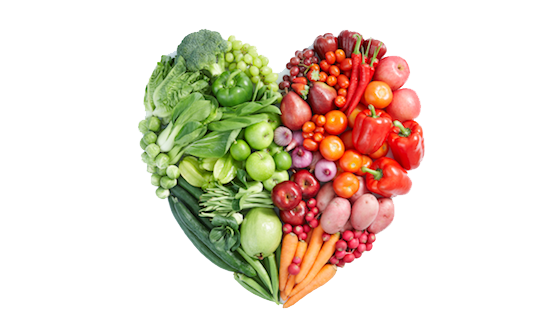
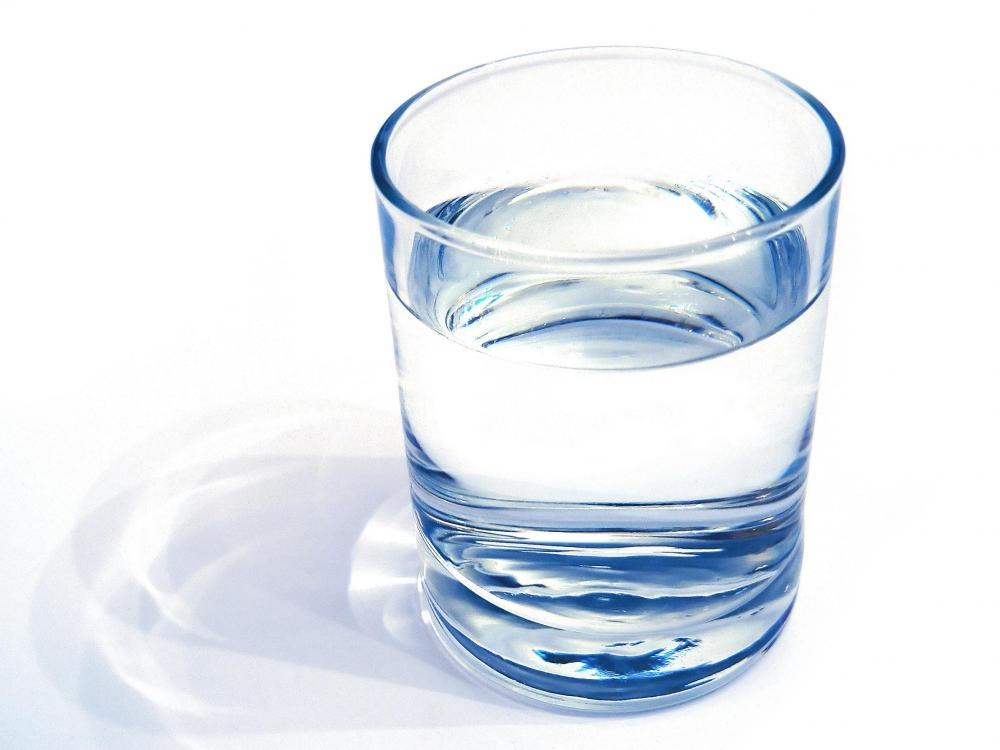
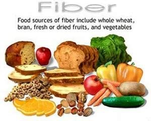
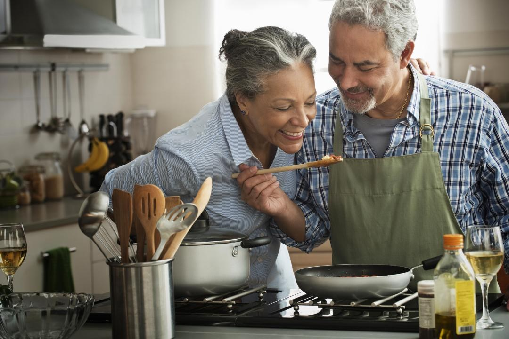
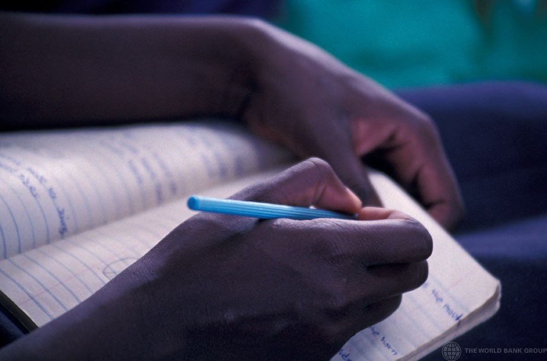

Kilo Vermekten Daha İyi 5 Beslenme Hedefi
Kendinizi fiziksel olarak iyi hissetmiyorsanız ya da yemekle ilişkiniz bozuksa, yeme şeklinizi değiştirmek oldukça iyi bir fikirdir. Belki rahatsız edici derecede şişkinsiniz ya da enerjiniz düşük. Belki de istediğinizden daha sık dışarıdan yemek aldığınızı ya da canınız sıkıldığında veya üzgün olduğunuzda yemek yediğinizi fark ediyorsunuz. Yedikleriniz konusunda daha dikkatli davranarak fiziksel ve zihinsel sağlığınızı iyileştirmeniz mümkün. Bunu yapmak vücut kompozisyonunuzda da değişikliklere bile yol açabilir. Önemli olan, kilo vermenin temel hedefiniz olması gerektiği yanılgısından kurtulmaktır.
Yeni yıla yiyeceklerle daha sağlıklı bir ilişki kurarak başlamayı umuyorsanız, işte dikkate almanız gereken, tartıya gerek olmayan beş diyet kararı.
Ekleyin, Çıkarmayın
PLOS One'da yayınlanan 2020 tarihli bir araştırmaya göre, insanların cazip bir şeyden kaçınmayı gerektiren hedefler yerine, rutinlerine bir ekleme içeren kararları sürdürme olasılığı daha yüksektir. İkramları sınırlandırmaya karar vermek yerine, daha çeşitli ve besin değeri yüksek gıdalar yemeyi hedefleyin. Her öğüne bir sebze eklemeyi veya her gün öğleden sonra atıştırmalığınız için bir parça meyve ve kuruyemiş yemeyi deneyin.
Bir uygulama veya basit bir not defteri kullanarak alışkanlığınızı tamamladığınız her günü takip etmek, hedefin ölçülebilir olmasını sağlayabilir. Alışkanlık kazanmak için küçük adımlarla başlayın. "Bunu her gün yapacağım demek yerine, belki haftada iki ya da üç kez yapacağım diyebilirsiniz."
Çıkarmak yerine eklemek fikri, sevdiğiniz şeyleri kısıtlamadan herhangi bir öğünü daha besleyici hale getirmeniz için size rehberlik edebilir. Cips ve kurabiyeleri evden kovmak yerine, onları doygun hissetmenize yardımcı olacak diğer yiyeceklerle (örneğin avokado veya bir kaşık fındık ezmesi) eşleştirmeyi hedefleyin. Makarna ve peynirinize veya köftenize yapraklı yeşillikler karıştırın. Sabah yumurtanızın içine bir avuç dondurulmuş ıspanak atın.
Daha Fazla Su İçin
Su, sağlığınız için büyük bir fark yaratabilecek basit bir katkı maddesidir. Nutrition Reviews dergisinde yayınlanan 2010 tarihli bir inceleme makalesine göre hafif dehidrasyon (vücut ağırlığınızın yüzde üçünden daha azına eşit su kaybı) yorgunluk, motivasyon düşüklüğü ve kabızlık gibi gastrointestinal problemlerle ilişkilidir. Kronik hafif dehidrasyon, idrar yolu enfeksiyonları, yüksek tansiyon, kalp hastalığı ve felç riskinin artmasına bile katkıda bulunabilir. Günde 2,5 ila 3,5 litre su içmeyi hedefleyin. Egzersiz yapıyorsanız daha fazla su için. Kendinize bir bardak su içmeyi hatırlatmak için, bunu rutininizin başka bir parçasına bağlayın. Başucunuza bir su şişesi bırakın ve uyanır uyanmaz birkaç yudum alın, masanıza oturduğunuzda bir fincan bitki çayı hazırlayın, dişlerinizi fırçaladığınızda bir bardak için. Ne kadar su içtiğinizi takip etmenize ve size yararlı hatırlatmalar göndermenize yardımcı olacak düzinelerce uygulama vardır. Sade su içmek angarya gibi geliyorsa, salatalık, limon suyu veya aromalı elektrolitler gibi daha ilginç şeyler eklemeyi deneyin.
Daha Fazla Lif Alın
Lif, bitki bazlı gıdalarda bulunan ve vücudumuzun sindiremediği maddedir. Bugün liflerin bağırsaklarımızdaki bakterileri beslediğini ve bunun da ruh halimizden bağışıklık sistemimize kadar her şey üzerinde dolaylı bir etkiye sahip olabileceğini biliyoruz. Bitkilerde lif, vücudun kullandığı şeker ve yağ gibi besinler için bir kapsül görevi görerek vücudumuzun bunları emmesini zorlaştırır. Yani lif açısından zengin kahverengi pirinç ya da fasulye yediğimizde, vücudumuz aslında içerdikleri tüm karbonhidratları emmez. Ayrıca bu besinleri daha yavaş emer ve daha uzun süre tok hissederiz. Ayrıca, lif açısından zengin gıdalar genellikle diğer besinler açısından da zengindir. Mayo Clinic, kadınların günde 21 ila 25 gram, erkeklerin ise 30 ila 38 gram lif almayı hedeflemelerini önermektedir. (Referans olarak, bir elma yaklaşık 5 gram lif içerir; bir fincan siyah fasulye 15 gram içerir).
Her Hafta Yeni Bir Tarif Pişirin
Her hafta yeni bir tarif pişirmek kolaydır, eğlencelidir ve ek bir bonus olarak sağlığa faydaları bile olabilir. Appetite dergisinde yayınlanan 2017 tarihli bir incelemeye göre, evde yemek pişiren insanların genel sağlık durumları daha iyi, kişisel ilişkileri daha yakın ve kültürel kimlik duyguları daha güçlü oluyor.
Olumlu etkileri en üst düzeye çıkarmak için, oturup pişirdiğiniz yemeğin tadını çıkarmak için zaman ayırın. Bu, arkadaşlarınızla veya ailenizle yemeğin tadını çıkarmak anlamına gelebilir, ancak Netflix'i kapatmak, bir mum yakmak ve kendiniz için hazırladığınız beslenmenin tadını çıkarmak kadar basit de olabilir. "Bu, ruh sağlığınıza dikkat etmenin bir yoludur." "Sizi hayatın anlamı ve neşesine bağlayabilir." Ayrıca, dışarıdan yemek için harcayacağınız paradan da tasarruf etmiş olursunuz.
Açlık Günlüğü Başlatın
Kalori saymak yerine, yediklerinizin sizi nasıl hissettirdiğini takip etmeye başlayın. Her öğünde ne yediğinizi not edin. Katı bir diyette olduğu gibi makro besinleri ve tam porsiyonları değil, tabağınıza ne girdiğinin basit bir özetini ve önceden ne kadar aç olduğunuzu ve sonrasında nasıl hissettiğinizi yazın.
Açlığa dikkat etmek, dışsal değil içsel ipuçlarına göre yemeyi teşvik eden bir diyet paradigması olan sezgisel beslenmenin önemli bir unsurudur. Sezgisel beslenmeyi uygulayan yetişkinlerin stresli yemek yeme olasılığı daha düşüktür ve genel olarak vücutlarıyla daha mutludurlar.
Sonuç
Beslenmede temel amaç kilo kaybı olmaktan çıktığında ve sağlıklı ve keyifli beslenmek asıl amaç olduğunda vücudumuz da bu yeni duruma göre şekillenecektir. Burada önemli olan sağlıklı beslenme alışkanlığının bizi zorlamayacağı küçük değişikliklerle başlanması ve süreklilik kazanmasıdır. Bir anda tüm beslenmeyi değiştirmek sadece zor değil, pratikte imkansızdır. Bunun yerine rotayı hafif hafif sağlığa çevirmek ve bunun kalıcı ve keyifli olmasını sağlamak bizi istediğimiz yere getirecektir. Giden fazla kilolar sağlıklı yaşamın yan etkisi olarak kendini zaten gösterecektir.